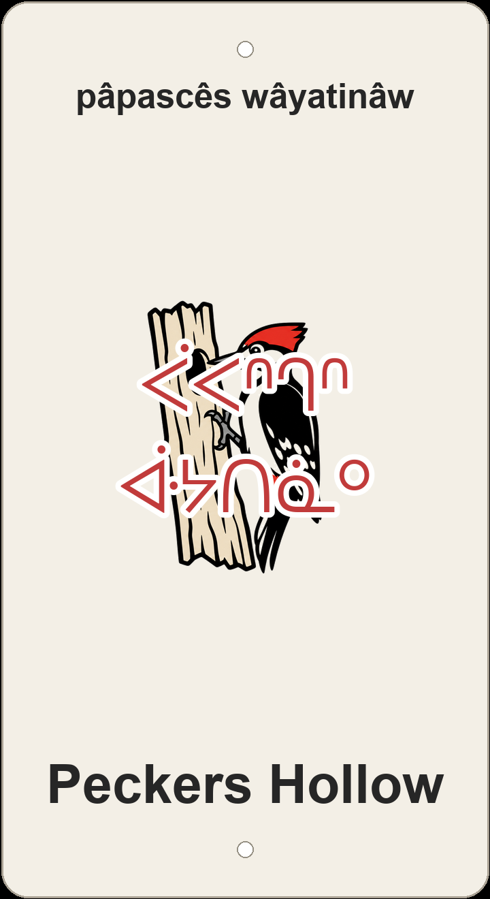

"woodpecker hollow"

Screenprinted woodpecker on a hollow tree — front view of the 3D-printed multi-colour sign.
The English trail name Peckers Hollow names a dip in the terrain where a woodpecker would work a hollow tree — and the plaque carries that picture into nêhiyawêwin as pâpascês wâyatinâw: pâpascês 'woodpecker' paired with wâyatinâw 'a hollow or depression in the land.' Two words, no borrowed English: the bird stays a bird, and the land-form carries the hollow.
English does not leave it there. Pecker is also slang for penis, so the nickname winks at a body-part joke the Cree never has to make. Pâpascês keeps the avian reading honest; wâyatinâw names the terrain dip and lets the innuendo ride on the English side. The screenprint makes the straight reading visible: a woodpecker perched on a hollow tree trunk, beak at a round knot-hole — bird, tree, hollow, all literal.
Two other renderings stayed off the plaque but show how builders weighed the joke. Pâpascês omeskanaw wâyatinihk 'the woodpecker's trail in the hollow' foregrounds the bird and keeps the locative hollow suggestive; wâyatinâw meskanaw 'the hollow trail' strips the bird out entirely and lets the terrain dip do all the talking. On the same Buena Vista hillside the nicknames answer each other: neighbour Raven (kâhkâkiw), Buenavista Alt Track (Bwênavista meskanaw kotak), and Tin Pan Alley (nikamowin meskanaw) braid English humour into one local web beside this sign.
Like every sign in this series, Peckers Hollow sits on ᓀᐦᐃᔭᐤ ᐊᐢᑭᕀ Nêhiyaw-Askiy — Plains Cree territory, Treaty 6, and a homeland of the Métis Nation. These plaques are one way of putting nêhiyawêwin back on the land it was always spoken on.
About 640 m of singletrack in Buena Vista — 17 m of descent and 19 m of ascent through the river-valley network. Tap through to Trailforks (peckers-hollow) for the mapped line and 45-point GPX track.
Explore the trail on Trailforks, with a local preview from the uploaded GPX.
omeskanaw 'his trail' + wâyatinihk 'in the hollow' (locative). Bird reading foregrounded; the hollow stays suggestive.
Focus on the dip in the terrain: wâyatinâw + meskanaw. Leaves 'pecker' implicit; the clean reading.
| English | SRO | Syllabics |
|---|---|---|
| woodpecker hollow | pâpascês wâyatinâw | ᐹᐸᐢᒉᐢ ᐚᔭᑎᓈᐤ |
| the woodpecker's trail in the hollow | pâpascês omeskanaw wâyatinihk | ᐹᐸᐢᒉᐢ ᐅᒣᐢᑲᓇᐤ ᐚᔭᑎᓂᕽ |
| the hollow/valley trail | wâyatinâw meskanaw | ᐚᔭᑎᓈᐤ ᒣᐢᑲᓇᐤ |
SRO uses ê î ô â. Syllabics match the SRO shown.
Dialectal preferences may affect minor spelling choices; check local norms for signage.
References: itwêwina, Online Cree Dictionary, Plains Cree Dictionary
Each sign is 3D printed in Edmonton. Want one for your own trail, cabin or wall? Email hello@nehiyomtb.ca.